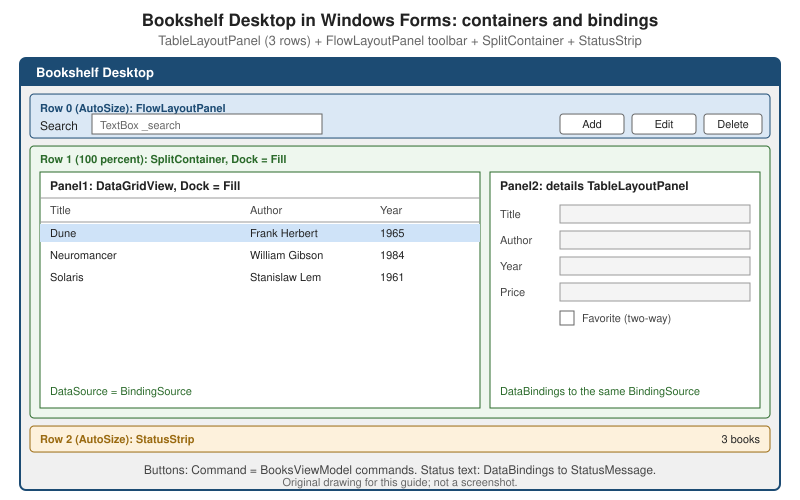

Windows Forms on .NET
|
This content was generated with the assistance of AI and should be verified against the official documentation before being relied on in production. |
Windows Forms is the oldest of the Windows UI stacks that Microsoft still ships, and on .NET it is neither frozen nor rewritten: it is a mature, event-driven wrapper over the classic Win32 controls, with a drag-and-drop designer in Visual Studio, that receives a modest set of additions each year. This page covers the parts that matter when you build a real application on .NET 10 today — the designer, project settings, layout, data binding, high DPI, dark mode, the async APIs and the clipboard changes — and builds the main screen of the section’s running scenario, Bookshelf Desktop, in Windows Forms. The choice between this stack and the others is made on Windows App Platforms: WPF, WinUI 3, WinForms, MAUI & More; here the choice is assumed.
The page was written against these versions, current in October 2026:
-
.NET 10 LTS, latest patch 10.0.13, with C# 14. .NET 11 is at release candidate 2 (general availability is expected 10 to 13 November 2026). The Microsoft Learn "What’s new in Windows Forms" series that was checked for this page covers .NET 6, 8, 9 and 10; this page does not describe .NET 11 changes to Windows Forms.
-
Visual Studio 2026 18.11.1 with the ".NET desktop development" workload, whose Windows Forms designer runs out of process (explained below).
-
CommunityToolkit.Mvvm 8.4.2 for the view models, which are the same ones used by the WPF and WinUI 3 pages.
-
Windows 11 and Windows 10. Two features below have an operating-system floor: dark mode needs Windows 11, and one
ScreenCaptureModevalue needs Windows 10 version 2004.
The scenario types come from the Commands and MVVM Toolkit pages: Book (a positional record), IBookRepository,
BookViewModel, BooksViewModel, BookEditorViewModel and IDialogService. Nothing in them depends on a UI stack,
which is the point: the view model project is referenced unchanged from the WPF, WinUI 3 and Windows Forms projects.
What Windows Forms Is, and What Microsoft Learn Says About It
Windows Forms builds an application from forms (top-level windows) that contain controls (discrete elements that
display or accept data). Each control raises events and the application responds to them in code. There is no markup
language: the designer writes ordinary C# into a .Designer.cs file, and "XAML isn’t coming to Windows Forms", in the words
of the .NET 8 release notes. The controls are thin managed wrappers over Win32 common controls (plus some drawn by
Windows Forms itself), which is why the look is native, why the controls are cheap, and why custom drawing is done with
System.Drawing (GDI+) rather than with a composition engine.
Two implementations exist. The one on .NET is open source (the dotnet/winforms repository) and is the only one that
receives new features. The .NET Framework 4 implementation is part of Windows and is serviced, not extended.
| Topic | What the Learn documentation offers |
|---|---|
Overview |
The Windows Forms overview describes forms, controls, events, |
What’s new |
One page per release ( |
Layout |
"Control layout options" explains |
Designer |
"Visual Studio Design-time overview" explains the out-of-process designer and how to write custom control designers. |
Events and async |
"Events Overview" has an Async event handlers section with the |
High DPI |
The page named "High DPI support" still describes the .NET Framework 4.7 configuration and says at the top that .NET is configured through the project file (see the .NET 6 release notes). The MSBuild property reference is the .NET source. |
MVVM |
There is no MVVM guide for Windows Forms. The .NET 8 release notes describe the binding engine and button commands that make it possible; the combination used in this page is a pattern built on those documented pieces, not an official sample. |
The Project and the Application Bootstrap
A Windows Forms project is an SDK-style project that targets a Windows-specific target framework moniker and sets
UseWindowsForms. OutputType WinExe makes it an application instead of a library.
<Project Sdk="Microsoft.NET.Sdk">
<PropertyGroup>
<OutputType>WinExe</OutputType>
<TargetFramework>net10.0-windows</TargetFramework>
<Nullable>enable</Nullable>
<ImplicitUsings>enable</ImplicitUsings>
<UseWindowsForms>true</UseWindowsForms>
<RootNamespace>Bookshelf.WinForms</RootNamespace>
<!-- Read by the source-generated ApplicationConfiguration.Initialize() and by the designer -->
<ApplicationVisualStyles>true</ApplicationVisualStyles>
<ApplicationUseCompatibleTextRendering>false</ApplicationUseCompatibleTextRendering>
<ApplicationHighDpiMode>PerMonitorV2</ApplicationHighDpiMode>
<ApplicationDefaultFont>Segoe UI, 9pt</ApplicationDefaultFont>
</PropertyGroup>
<ItemGroup>
<PackageReference Include="CommunityToolkit.Mvvm" Version="8.4.2" />
<PackageReference Include="Microsoft.EntityFrameworkCore.Abstractions" Version="10.0.0" />
<PackageReference Include="Microsoft.Extensions.Hosting" Version="10.0.0" />
<ProjectReference Include="..\Bookshelf.Core\Bookshelf.Core.csproj" />
<ProjectReference Include="..\Bookshelf.Desktop.ViewModels\Bookshelf.Desktop.ViewModels.csproj" />
</ItemGroup>
</Project>The Microsoft.EntityFrameworkCore.Abstractions reference is there for one extension method, ToBindingList, used in
the data binding section. The project reference names for the shared libraries are illustrative.
ApplicationConfiguration.Initialize
Since .NET 6 the template’s Main calls ApplicationConfiguration.Initialize(), a method that the SDK generates at
compile time from the project file. It replaces the calls that older code made by hand (EnableVisualStyles,
SetCompatibleTextRenderingDefault, SetHighDpiMode). The project file is the preferred place for these settings
because Visual Studio’s designer reads it too; if you bypass Initialize, the designer ignores your bootstrap settings.
| Project property | Default | Corresponding API | Notes |
|---|---|---|---|
|
|
|
Themed (not classic) common controls. |
|
|
|
|
|
|
|
|
|
empty (use |
|
Format |
|
|
(designer only) |
Runs the designer tab at 100 percent so that a DPI-unaware app is designed at the scale it runs. Added with Visual Studio 2022 17.8; reload the project after changing it. |
Dark mode is not a project property: Application.SetColorMode is called in code, after Initialize and before the first
control is created. The Dark Mode section shows it in the Program.cs that wires the whole application.
Two further template changes from .NET 6 are worth knowing when reading older code. The C# templates enable global
using directives, file-scoped namespaces and nullable reference types, but not top-level statements, because a Windows
Forms app needs [STAThread] on Main and spreads over several files.
The Designer
The Windows Forms designer is the reason many teams choose the stack. You drag controls from the Toolbox, set properties in the Properties window, double-click to create an event handler, and Visual Studio writes the result as C#.
Files of a form
| File | Content |
|---|---|
|
Your code: the constructor, event handlers, data binding. The class is |
|
Generated by the designer: field declarations for every control and one method, |
|
Resources of the form: localized strings, images and the values of properties marked |
The constructor of the form calls InitializeComponent() first and only then touches controls. Application logic does not
belong in the designer file, and designer-generated code should stay free of anything that cannot run at design time
(opening a database, reading a service). The Layout section below prints a hand-written InitializeComponent for the
Bookshelf form so that the full code is visible; in a real project the designer produces the same assignments.
The out-of-process designer
Visual Studio itself is a .NET Framework application. With a .NET Framework project, the application being designed and
Visual Studio run in the same process, devenv.exe. A .NET (not .NET Framework) project cannot be loaded into that
process, so Windows Forms on .NET uses an out-of-process designer: a separate process, DesignToolsServer.exe, runs
next to devenv.exe, on the same version and platform of .NET that the app targets (for example .NET 10 and x64). The
design surface in Visual Studio works with proxy objects for the controls; the real controls live in the server process.
This architecture matters in four situations:
-
Custom controls with simple design-time needs work as before: attributes such as
Browsable,Category,DefaultValue,Description,DesignerSerializationVisibilityandLocalizablestill drive the Properties window. -
Custom designers, action lists and type editors need a client-server design. The documented route is to reference the
Microsoft.WinForms.Designer.SDKNuGet package, derive fromMicrosoft.DotNet.DesignTools.Designers.ControlDesignerand applyDesignerAttribute. Designers written againstSystem.ComponentModel.Designneed namespace and type changes. -
Built-in property editors can be reused by naming the .NET Framework type in
EditorAttribute, which avoids writing the proxy communication yourself. -
Debugging a designer means attaching a second Visual Studio instance to
DesignToolsServer.exe.
UITypeEditor types from .NET Framework (the ToolStripCollectionEditor and severaleditors for DataGridView), so they now appear in the PropertyGrid and the Designer Actions panel, and it fixed
snap lines for custom designers.
Designer pitfalls
-
The form is instantiated by the designer. Code in the constructor or in
OnLoadthat needs a service, a database or the registry runs at design time too. Guard it withDesignMode(note thatDesignModeisfalseinside the constructor, so check it inOnLoador later) or keep it out of the form. A form whose constructor only accepts services, as theMainFormbelow does, is normally opened in the designer through a second, parameterless constructor kept for design time; this is common practice rather than something the documentation prescribes. -
The designer is DPI-aware by default. A DPI-unaware app is easier to design with
ForceDesignerDPIUnaware. -
AutoSizeonFormis shadowed at design time. The designer behaves as ifAutoSizewerefalsefor the form, regardless of the actual setting; at run time the property applies as set. -
BinaryFormatteris gone. Since .NET 9 the removedBinaryFormattercan no longer serialize arbitrary objects, and the designer relies on a safer, restricted subset for known types. Custom designer code that used it must change.
Controls and Layout
Placement in Windows Forms is determined by the control and by its parent. The Location and Size properties give
fixed placement relative to the top-left corner of the parent; Dock and Anchor give automatic placement; container
controls impose their own layout on their children.
Properties that drive layout
| Property | Behaviour |
|---|---|
|
Fixed position and size, relative to the parent’s top-left corner. Ignored for the dimension a container controls. |
|
Always honoured, whatever the value of |
|
Space around the control that keeps neighbours away from its border. The designer’s snap lines respect it. |
|
Space inside the control that keeps its content (such as |
|
Aligns one border to the matching side of the parent (or fills it). The container sets position and one dimension; the
control’s own |
|
Ties the control to one or more sides of the parent; as the parent resizes, the distance to the anchored sides is kept. Anchoring to opposite sides stretches the control. |
|
Lets a control change size to fit |
|
|
Automatic sizing is a run-time feature that never takes effect and then stops: a control that grows does so to the right
and downwards, Dock and Anchor are honoured when AutoSize is true (except that a docked Label does not stretch),
and there is no default minimum, so an empty auto-sized control with GrowAndShrink can shrink to a point.
Docking and z-order
The z-order of controls, which is their index in the parent’s Controls collection, affects docking. Docked controls take
the space that is still free when they are laid out; two controls docked to the same side stack in z-order; a control docked
Top before one docked Left leaves the left control less vertical space, and reversing the order reverses the result.
In practice, the control that must fill the remaining area (DockStyle.Fill) has to sit at the front of the z-order
(index 0), so that edge-docked controls are laid out before it. Visual Studio’s Bring to Front and Send to Back commands
change exactly this, and the Controls.Add calls in generated code appear in the order that produces the intended result.
The sample form below avoids the problem by using a TableLayoutPanel for the three horizontal bands.
Container controls
| Container | Use |
|---|---|
|
Groups controls without caption or border; clips children outside its bounds, and shows scroll bars when |
|
Groups controls under a caption; clips but does not scroll. |
|
Flows children horizontally or vertically ( |
|
A grid. |
|
Two panels separated by a movable bar. |
|
Pages ( |
The Bookshelf Desktop main form
The main form uses a TableLayoutPanel with two rows (a toolbar sized to its content and a work area taking all remaining
height), a FlowLayoutPanel for the toolbar, a SplitContainer with the book grid on the left and a details pane on the
right, and a StatusStrip docked to the bottom of the form.

The layout is written in the form’s InitializeComponent, as the designer would produce it.
// Bookshelf.WinForms/MainForm.Designer.cs
namespace Bookshelf.WinForms;
partial class MainForm
{
private System.ComponentModel.IContainer? components;
private TableLayoutPanel _root = null!;
private FlowLayoutPanel _toolbar = null!;
private Label _searchLabel = null!;
private TextBox _search = null!;
private Button _add = null!;
private Button _edit = null!;
private Button _delete = null!;
private SplitContainer _split = null!;
private DataGridView _grid = null!;
private TableLayoutPanel _details = null!;
private TextBox _titleBox = null!;
private TextBox _authorBox = null!;
private TextBox _yearBox = null!;
private TextBox _priceBox = null!;
private CheckBox _favorite = null!;
private StatusStrip _status = null!;
private ToolStripStatusLabel _statusLabel = null!;
protected override void Dispose(bool disposing)
{
if (disposing)
{
components?.Dispose();
}
base.Dispose(disposing);
}
private void InitializeComponent()
{
components = new System.ComponentModel.Container();
_root = new TableLayoutPanel();
_toolbar = new FlowLayoutPanel();
_searchLabel = new Label();
_search = new TextBox();
_add = new Button();
_edit = new Button();
_delete = new Button();
_split = new SplitContainer();
_grid = new DataGridView();
_details = new TableLayoutPanel();
_titleBox = new TextBox();
_authorBox = new TextBox();
_yearBox = new TextBox();
_priceBox = new TextBox();
_favorite = new CheckBox();
_status = new StatusStrip();
_statusLabel = new ToolStripStatusLabel();
SuspendLayout();
// Two bands: toolbar (AutoSize) and work area (100 percent); the StatusStrip docks to the bottom of the form.
_root.Dock = DockStyle.Fill;
_root.ColumnCount = 1;
_root.RowCount = 2;
_root.ColumnStyles.Add(new ColumnStyle(SizeType.Percent, 100F));
_root.RowStyles.Add(new RowStyle(SizeType.AutoSize));
_root.RowStyles.Add(new RowStyle(SizeType.Percent, 100F));
_root.Controls.Add(_toolbar, 0, 0);
_root.Controls.Add(_split, 0, 1);
// Toolbar: a FlowLayoutPanel that sizes to its content.
_toolbar.AutoSize = true;
_toolbar.Dock = DockStyle.Fill;
_toolbar.WrapContents = false;
_toolbar.Padding = new Padding(4);
_searchLabel.Text = "&Search";
_searchLabel.AutoSize = true;
_searchLabel.Anchor = AnchorStyles.Left;
_search.Width = 260;
_search.AccessibleName = "Search books";
_add.Text = "&Add";
_add.AutoSize = true;
_edit.Text = "&Edit";
_edit.AutoSize = true;
_delete.Text = "&Delete";
_delete.AutoSize = true;
_toolbar.Controls.AddRange([_searchLabel, _search, _add, _edit, _delete]);
// Work area: grid on the left, details on the right.
_split.Dock = DockStyle.Fill;
_split.SplitterDistance = 480;
_split.Panel1.Controls.Add(_grid);
_split.Panel2.Controls.Add(_details);
_grid.Dock = DockStyle.Fill;
_grid.ReadOnly = true;
_grid.AllowUserToAddRows = false;
_grid.AllowUserToDeleteRows = false;
_grid.AutoGenerateColumns = false;
_grid.MultiSelect = false;
_grid.SelectionMode = DataGridViewSelectionMode.FullRowSelect;
_grid.RowHeadersVisible = false;
_grid.AccessibleName = "Books";
_grid.Columns.AddRange(
new DataGridViewTextBoxColumn
{
Name = "Title",
HeaderText = "Title",
DataPropertyName = "Title",
AutoSizeMode = DataGridViewAutoSizeColumnMode.Fill,
},
new DataGridViewTextBoxColumn
{
Name = "Author",
HeaderText = "Author",
DataPropertyName = "Author",
AutoSizeMode = DataGridViewAutoSizeColumnMode.Fill,
},
new DataGridViewTextBoxColumn
{
Name = "Year",
HeaderText = "Year",
DataPropertyName = "Year",
Width = 60,
});
// Details pane: label column sized to content, value column takes the rest.
_details.Dock = DockStyle.Top;
_details.AutoSize = true;
_details.ColumnCount = 2;
_details.ColumnStyles.Add(new ColumnStyle(SizeType.AutoSize));
_details.ColumnStyles.Add(new ColumnStyle(SizeType.Percent, 100F));
_details.Padding = new Padding(8);
AddRow(_details, 0, "Title", _titleBox);
AddRow(_details, 1, "Author", _authorBox);
AddRow(_details, 2, "Year", _yearBox);
AddRow(_details, 3, "Price", _priceBox);
_favorite.Text = "&Favorite";
_favorite.AutoSize = true;
_details.Controls.Add(_favorite, 1, 4);
// Status strip docks to the bottom of the form.
_statusLabel.Text = "Ready";
_status.Items.Add(_statusLabel);
// The Fill control is added first so it is laid out last; the StatusStrip then takes its edge first.
Controls.Add(_root);
Controls.Add(_status);
AutoScaleDimensions = new SizeF(96F, 96F);
AutoScaleMode = AutoScaleMode.Dpi;
ClientSize = new Size(900, 540);
MinimumSize = new Size(640, 360);
Text = "Bookshelf Desktop";
ResumeLayout(false);
PerformLayout();
}
private static void AddRow(TableLayoutPanel table, int row, string caption, TextBox value)
{
var label = new Label { Text = caption, AutoSize = true, Anchor = AnchorStyles.Left };
value.ReadOnly = true;
value.Dock = DockStyle.Fill;
value.AccessibleName = caption;
table.Controls.Add(label, 0, row);
table.Controls.Add(value, 1, row);
}
}Source: Control layout options
The form sets AutoScaleMode to Dpi with a 96-DPI base so that the layout scales with the display; the High DPI
section returns to this. The TableLayoutPanel rows and the FlowLayoutPanel use the sizing that makes the form adapt
to larger fonts and translated captions without absolute pixel positions.
Data Binding
Windows Forms has two data binding systems, and they are easy to confuse.
-
The classic engine, in place since .NET Framework 1.0, binds a property of a control to a data source and data member through the
Control.DataBindingscollection ofBindingobjects, and binds list controls (DataGridView,ListBox,ComboBox) through theirDataSource. ABindingSourcecomponent sits between the controls and the data. -
The enhanced engine, shipped in .NET 8 after a preview in .NET 7, is modelled after WPF. The
IBindableComponentinterface and theBindableComponentclass drive it,Controlimplements the interface, and it adds command binding (Commandon buttons) and the ability to bind to view models. It does not replace the classic engine; both coexist andDataBindingsis where bindings are declared in either case.
The Microsoft statement is explicit about the intent: the enhanced engine "makes it easier to implement MVVM design principles" and enables code sharing with WPF, UWP/WinUI and .NET MAUI view models, but "XAML isn’t coming to Windows Forms". Unlike WPF, there is no binding expression in markup; every binding is a line of C# or an entry written by the designer under the (DataBindings) node of the Properties window.
BindingSource
BindingSource is a component that encapsulates a data source for a form. It provides currency management (which item
is "current"), change notification, sorting and filtering, and a single object to bind several controls to, so they stay
in step.
| Member | Purpose |
|---|---|
|
The list, single object or type to bind, and optionally a sub-list in it. Setting |
|
The current item and its index. Navigation uses |
|
|
|
The underlying list changed or an item in it changed. |
|
Operate through the underlying list. They need a list that supports them ( |
|
Editing operations on the current item. |
|
Force bound controls to reread all items, one item or the current item. |
|
Pause updates, or silence |
Many of its members forward to the underlying IList, so with a custom list the exact behaviour of Remove, Insert and
others depends on that list’s implementation.
Source: BindingSource class
Binding to ObservableCollection
The view model exposes ObservableCollection<BookViewModel>, the collection every XAML stack binds to. BindingSource
and DataGridView expect IBindingList semantics (the ListChanged event with property descriptors), which
ObservableCollection<T> does not implement. A Windows Forms grid bound directly to it displays the items present at
binding time and then ignores additions and removals. There are two ways to bridge:
-
Wrap the collection with
ToBindingList(). The extension method, defined by Entity Framework Core in the namespaceMicrosoft.EntityFrameworkCore(packageMicrosoft.EntityFrameworkCore.Abstractions), returns aBindingList<T>implementation that stays in sync with the givenObservableCollection<T>.Tmust be a class. The method is markedRequiresUnreferencedCodebecauseBindingListuses property descriptors, which is acceptable here because Windows Forms does not support trimming. -
Rebuild a
BindingList<T>whenever the collection or the filter changes, and assign it toBindingSource.DataSource. This is what the sample below does, because the Bookshelf search filter needs it: a plainBindingList<T>does not supportBindingSource.Filter(that requiresIBindingListView).
// The two-line version when no filtering is needed
using Microsoft.EntityFrameworkCore;
_books.DataSource = _viewModel.Books.ToBindingList();The BookViewModel items themselves implement INotifyPropertyChanged through ObservableObject, so a property change on
an item (for example IsFavorite) reaches the grid and the details pane. BindingList<T> listens to items that implement
INotifyPropertyChanged and raises ListChanged with the item’s index; the Binding class also listens to
INotifyPropertyChanged on its data source.
The main form’s code
// Bookshelf.WinForms/MainForm.cs
using System.Collections.Specialized;
using System.ComponentModel;
using System.Globalization;
using Bookshelf.Desktop.ViewModels;
namespace Bookshelf.WinForms;
public partial class MainForm : Form
{
private readonly BooksViewModel _viewModel;
private readonly BindingSource _books = new();
public MainForm(BooksViewModel viewModel)
{
_viewModel = viewModel;
InitializeComponent();
BindControls();
}
private void BindControls()
{
// The grid and the details pane share one BindingSource, so they share one current item.
_grid.DataSource = _books;
ApplyFilter();
_viewModel.Books.CollectionChanged += OnBooksChanged;
_viewModel.PropertyChanged += OnViewModelPropertyChanged;
// Details pane: one-way (DataSourceUpdateMode.Never) because BookViewModel wraps an immutable Book.
_titleBox.DataBindings.Add(nameof(TextBox.Text), _books, nameof(BookViewModel.Title), false, DataSourceUpdateMode.Never);
_authorBox.DataBindings.Add(nameof(TextBox.Text), _books, nameof(BookViewModel.Author), false, DataSourceUpdateMode.Never);
_yearBox.DataBindings.Add(nameof(TextBox.Text), _books, nameof(BookViewModel.Year), false, DataSourceUpdateMode.Never);
var price = new Binding(nameof(TextBox.Text), _books, nameof(BookViewModel.Price), formattingEnabled: true)
{
DataSourceUpdateMode = DataSourceUpdateMode.Never,
FormatString = "C2",
FormatInfo = CultureInfo.CurrentCulture,
};
_priceBox.DataBindings.Add(price);
// IsFavorite has a public setter on BookViewModel, so this one is two-way and immediate.
_favorite.DataBindings.Add(nameof(CheckBox.Checked), _books, nameof(BookViewModel.IsFavorite), false, DataSourceUpdateMode.OnPropertyChanged);
// View model <-> search box. OnPropertyChanged writes on every keystroke, not on leaving the box.
_search.DataBindings.Add(nameof(TextBox.Text), _viewModel, nameof(BooksViewModel.SearchText), false, DataSourceUpdateMode.OnPropertyChanged);
// Status bar text follows StatusMessage.
_statusLabel.DataBindings.Add(nameof(ToolStripStatusLabel.Text), _viewModel, nameof(BooksViewModel.StatusMessage));
// Selection: the BindingSource's current item is the view model's SelectedBook.
_books.CurrentChanged += (_, _) => _viewModel.SelectedBook = _books.Current as BookViewModel;
// Commands: Button.Command follows CanExecute (the button is disabled when it returns false).
_add.Command = _viewModel.AddBookCommand;
_edit.Command = _viewModel.EditSelectedCommand;
_delete.Command = _viewModel.DeleteSelectedCommand;
}
private void OnBooksChanged(object? sender, NotifyCollectionChangedEventArgs e) => ApplyFilter();
private void OnViewModelPropertyChanged(object? sender, PropertyChangedEventArgs e)
{
if (e.PropertyName == nameof(BooksViewModel.SearchText))
{
ApplyFilter();
}
}
// Rebuilds the list the BindingSource shows. BindingList<T> raises ListChanged for item property changes.
private void ApplyFilter()
{
var text = _viewModel.SearchText?.Trim();
var visible = string.IsNullOrEmpty(text)
? _viewModel.Books.ToList()
: _viewModel.Books
.Where(b => b.Title.Contains(text, StringComparison.CurrentCultureIgnoreCase)
|| b.Author.Contains(text, StringComparison.CurrentCultureIgnoreCase))
.ToList();
_books.DataSource = new BindingList<BookViewModel>(visible);
}
protected override async void OnShown(EventArgs e)
{
base.OnShown(e);
// async void is acceptable for an event-handler-like override; catch everything inside.
try
{
await _viewModel.LoadCommand.ExecuteAsync(null);
}
catch (Exception ex)
{
_viewModel.StatusMessage = $"Could not load books: {ex.Message}";
}
}
}Source: What’s new in Windows Forms for .NET 8 and BindingSource class. The wiring is a Bookshelf pattern, not an official sample.
The flow of data is the same shape as in WPF: the view model owns the state, the controls observe it, and user input flows
back through the Binding. What differs is the plumbing in the middle.
Binding mechanics worth knowing
| Setting | Meaning |
|---|---|
|
The control writes to the source when the control is validated, usually on losing focus. Fine for forms with an OK
button; a view-model-driven search box wants |
|
Writes on every change of the control property. |
|
One-way: the control displays the source but never writes back. |
|
Turns on the |
|
The format and culture used when formatting is enabled. Use the current culture for a user-facing price. |
|
|
Validation with ErrorProvider
WPF shows validation through adorners and Validation.ErrorTemplate; Windows Forms uses the ErrorProvider component,
which shows an error icon next to a control and the message in a tooltip. ErrorProvider understands IDataErrorInfo when
it is given a DataSource; BookEditorViewModel is an ObservableValidator, which implements INotifyDataErrorInfo
instead, so the form forwards the errors itself. The edit dialog binds the editor view model and forwards ErrorsChanged.
// Bookshelf.WinForms/BookEditorForm.cs
using Bookshelf.Desktop.ViewModels;
namespace Bookshelf.WinForms;
public sealed class BookEditorForm : Form
{
private readonly BookEditorViewModel _viewModel;
private readonly ErrorProvider _errors = new() { BlinkStyle = ErrorBlinkStyle.NeverBlink };
private readonly Dictionary<string, Control> _fields = [];
private readonly TextBox _title = new() { Dock = DockStyle.Fill, AccessibleName = "Title" };
private readonly TextBox _author = new() { Dock = DockStyle.Fill, AccessibleName = "Author" };
private readonly NumericUpDown _year = new() { Dock = DockStyle.Fill, Minimum = 0, Maximum = 2100, AccessibleName = "Year" };
private readonly NumericUpDown _price = new() { Dock = DockStyle.Fill, DecimalPlaces = 2, Maximum = 10000, AccessibleName = "Price" };
private readonly TextBox _isbn = new() { Dock = DockStyle.Fill, AccessibleName = "ISBN" };
private readonly Button _ok = new() { Text = "&Save", AutoSize = true };
private readonly Button _cancel = new() { Text = "&Cancel", AutoSize = true, DialogResult = DialogResult.Cancel };
public BookEditorForm(BookEditorViewModel viewModel)
{
_viewModel = viewModel;
Text = "Book";
AutoScaleDimensions = new SizeF(96F, 96F);
AutoScaleMode = AutoScaleMode.Dpi;
FormBorderStyle = FormBorderStyle.FixedDialog;
StartPosition = FormStartPosition.CenterParent;
MinimizeBox = false;
MaximizeBox = false;
ShowInTaskbar = false;
AcceptButton = _ok;
CancelButton = _cancel;
var table = new TableLayoutPanel
{
Dock = DockStyle.Fill,
AutoSize = true,
AutoSizeMode = AutoSizeMode.GrowAndShrink,
ColumnCount = 2,
Padding = new Padding(12),
};
table.ColumnStyles.Add(new ColumnStyle(SizeType.AutoSize));
table.ColumnStyles.Add(new ColumnStyle(SizeType.Percent, 100F));
AddField(table, 0, "&Title", _title, nameof(BookEditorViewModel.Title), nameof(TextBox.Text));
AddField(table, 1, "&Author", _author, nameof(BookEditorViewModel.Author), nameof(TextBox.Text));
AddField(table, 2, "&Year", _year, nameof(BookEditorViewModel.Year), nameof(NumericUpDown.Value));
AddField(table, 3, "&Price", _price, nameof(BookEditorViewModel.Price), nameof(NumericUpDown.Value));
AddField(table, 4, "&ISBN", _isbn, nameof(BookEditorViewModel.Isbn), nameof(TextBox.Text));
var buttons = new FlowLayoutPanel
{
AutoSize = true,
FlowDirection = FlowDirection.RightToLeft,
Dock = DockStyle.Fill,
};
buttons.Controls.AddRange([_cancel, _ok]);
table.Controls.Add(buttons, 1, 5);
Controls.Add(table);
AutoSize = true;
AutoSizeMode = AutoSizeMode.GrowAndShrink;
_errors.ContainerControl = this;
_viewModel.ErrorsChanged += (_, e) => ShowErrors(e.PropertyName);
_ok.Click += OnSaveClicked;
}
private void AddField(TableLayoutPanel table, int row, string caption, Control editor, string member, string controlProperty)
{
var label = new Label { Text = caption, AutoSize = true, Anchor = AnchorStyles.Left, UseMnemonic = true };
table.Controls.Add(label, 0, row);
table.Controls.Add(editor, 1, row);
// formattingEnabled converts between the control's decimal Value and the view model's int or decimal.
editor.DataBindings.Add(controlProperty, _viewModel, member, true, DataSourceUpdateMode.OnPropertyChanged);
_fields[member] = editor;
}
private void ShowErrors(string? propertyName)
{
foreach (var (member, control) in _fields)
{
if (string.IsNullOrEmpty(propertyName) || propertyName == member)
{
var messages = _viewModel.GetErrors(member).Select(r => r.ErrorMessage);
_errors.SetError(control, string.Join(Environment.NewLine, messages));
}
}
}
private void OnSaveClicked(object? sender, EventArgs e)
{
// ToBook() validates every property, including ones the user never touched, and returns null on errors.
if (_viewModel.ToBook() is null)
{
foreach (var member in _fields.Keys)
{
ShowErrors(member);
}
return;
}
DialogResult = DialogResult.OK;
}
}Source: ObservableValidator and ErrorProvider. The forwarding of ErrorsChanged to ErrorProvider is a Bookshelf pattern.
Because the dialog’s own Save button does not set DialogResult in the designer, the click handler decides: the dialog
stays open while there are errors, which is the Windows Forms equivalent of a WPF Window that sets DialogResult only
when valid. See Validation for the WPF mechanisms and a comparison across the three
stacks.
MVVM in Windows Forms
Everything above is MVVM: no business rule is in a handler, the form creates no Book and calls no repository. The pieces
that make it work on .NET 8 and later are all officially documented, even if the combination is not:
-
Button.CommandandCommandParameter. AnICommandassigned toButtonBase.Commandis invoked on click. The button listens toCanExecuteChangedand enables or disables itself fromCanExecute. Both properties appear under (DataBindings) in the Properties window. The MVVM Toolkit’s generated commands areICommandimplementations, so they work unchanged. -
Bindings to a view model.
DataBindings.Addwith the view model as the data source observesINotifyPropertyChanged. -
INotifyDataErrorInfothrough code. The form forwards the errors, as above; there is no automatic display.
What Windows Forms lacks relative to the XAML stacks is worth stating, because it shapes the code:
| Missing | Practical consequence |
|---|---|
Markup extensions and expression binding |
Bindings are C# statements or designer entries; refactoring a property name does not update string-based bindings, which
is why the sample uses |
|
Convert with |
Binding to the current item of a collection by path ( |
Share one |
Data templates and triggers |
Per-row appearance is code in |
Visual state management |
State is imperative: enable/disable controls from properties, or bind |
Command binding on every control |
|
A reasonable rule is to keep the form’s code-behind limited to what is genuinely view-specific — creating bindings,
CellFormatting handlers, drag and drop, and window chrome — and to move every decision into the view model.
High DPI
Windows scales an application on monitors with display scaling above 100 percent. A DPI-aware application is told the
real pixel density and must scale itself; a DPI-unaware one is bitmap-stretched by Windows and looks blurry. The mode is
set by ApplicationHighDpiMode in the project file (which the generated bootstrap turns into
Application.SetHighDpiMode):
HighDpiMode value |
Behaviour |
|---|---|
|
No scaling for DPI changes; always assumes 100 percent. |
|
Like |
|
Checks DPI at window creation and adjusts the scale factor when it changes. |
|
Like |
|
Queries the primary monitor’s DPI once and uses it on all monitors. |
The default is therefore not the best mode: a new application should set PerMonitorV2 explicitly, as the project file
above does. The examples in the Learn article named "High DPI support in Windows Forms" configure DpiAwareness in
app.config and the Windows 10 compatibility manifest; that applies to .NET Framework only. On .NET, use the project file.
Making the layout survive scaling
-
Use layout panels and
AutoSize, not absolute pixel positions, so that the same code works at 100, 150 and 200 percent. The Bookshelf form does. -
Set
AutoScaleMode.Dpi(withAutoScaleDimensionsof 96 by 96) scales controls by the DPI ratio;Fontscales by the ratio of the font size, and is what older forms use. The designer writes both properties; do not mix modes within one form hierarchy. (The values ofAutoScaleModeand their meaning were not re-checked against a Learn page for this document.) -
Scale bitmaps yourself.
Control.DeviceDpi,LogicalToDeviceUnitsandScaleBitmapLogicalToDeviceconvert logical pixels and images to the DPI of the device; supply several icon sizes (16, 20, 24, 32) rather than stretching one. -
React to monitor changes. The
Control.DpiChangedBeforeParent,DpiChangedAfterParentandForm.DpiChangedevents tell a control or form that its DPI changed, for example when a window is dragged between two monitors.
PerMonitorV2: controls are created with the application’s DPI awareness, and container controls and MDIchildren scale better (moving a window from a 200 percent to a 100 percent monitor no longer misplaces controls). .NET 8
scaled nested controls correctly (a button in a panel in a tab page) and scales Form.MinimumSize and MaximumSize for
the current monitor by default; set the runtime configuration property System.Windows.Forms.ScaleTopLevelFormMinMaxSizeForDpi
to false in runtimeconfig.json to return to the earlier behaviour.
To design a DPI-unaware application at the scale it runs, set ForceDesignerDPIUnaware (Visual Studio 2022 17.8 and later):
<PropertyGroup>
<ForceDesignerDPIUnaware>true</ForceDesignerDPIUnaware>
<ApplicationHighDpiMode>DpiUnawareGdiScaled</ApplicationHighDpiMode>
</PropertyGroup>Dark Mode
Dark mode was added as an experimental feature in .NET 9 (guarded by the compiler error WFO5001) and is stable in
.NET 10: the error is no longer raised and Application.SetColorMode is no longer experimental. Windows Forms "has fully
integrated dark mode support"; when the color mode changes, SystemColors change to match.
SystemColorMode value |
Meaning |
|---|---|
|
The default: light mode, the same as earlier versions of Windows Forms. |
|
Follows the light or dark setting of Windows. The mode is read when it is set; if the Windows setting changes afterwards, the application does not adapt to it. |
|
Dark mode. |
Rules from the API reference: call SetColorMode before creating any UI element, for example straight after
ApplicationConfiguration.Initialize(); dark color mode is available only on Windows 11 or later; and it is not available
when Windows is in a high contrast mode. In .NET 9 the call needed <NoWarn>$(NoWarn);WFO5001</NoWarn>; on .NET 10 it does
not.
The Program.cs below ties the host, the color mode and the main form together. It extends the version shown on the
Dependency Injection & the Generic Host page.
// Bookshelf.WinForms/Program.cs
using Bookshelf.Core;
using Bookshelf.Data;
using Microsoft.Extensions.DependencyInjection;
using Microsoft.Extensions.Hosting;
namespace Bookshelf.WinForms;
internal static class Program
{
[STAThread]
private static void Main()
{
ApplicationConfiguration.Initialize();
// Follow the Windows light/dark setting as it is when the app starts. Must precede any control.
Application.SetColorMode(SystemColorMode.System);
var builder = Host.CreateApplicationBuilder();
builder.Services.AddBookshelfCore(builder.Configuration);
builder.Services.AddSingleton<IDialogService, WinFormsDialogService>();
builder.Services.AddTransient<MainForm>();
using var host = builder.Build();
host.Start();
Application.Run(host.Services.GetRequiredService<MainForm>());
host.StopAsync().GetAwaiter().GetResult();
}
}Source: What’s new in Windows Forms for .NET 10, Application.SetColorMode and Use the .NET Generic Host in a Windows Forms app. AddBookshelfCore is the shared Bookshelf registration method.
A user setting for the theme
Because System is read once, an application that wants to offer "Light / Dark / Follow Windows" in its settings has to
apply the choice at start-up from the saved preference, and ask the user to restart (or recreate its forms) when the
choice changes. Do not rely on switching the mode of a form that is already shown.
Custom-drawn controls and legacy controls
Controls follow the application color mode. A control that you draw yourself but that hosts Win32 common controls (a
scroll bar, for example) stays light until you opt in to theming; a control that inherits already-themed behavior (a
Button) and does all its drawing can opt out. Both are done by calling
SetStyle(ControlStyles.ApplyThemingImplicitly, true or false) in an override of Control.CreateParams, before
base.CreateParams is read. The constructor is too late, because the base constructor reads CreateParams first.
public sealed class StarRatingControl : Control
{
protected override CreateParams CreateParams
{
get
{
// Must run before CreateParams is read from the base class; the constructor is too late.
SetStyle(ControlStyles.ApplyThemingImplicitly, true);
return base.CreateParams;
}
}
}Colors you write in code (a hard-coded Color.White row background, an owner-drawn cell) do not change with the mode.
Take them from SystemColors or from the control’s own BackColor and ForeColor, which follow the mode. Third-party
controls need to be checked individually, and so does any control that the .NET 10 documentation does not mention.
Async APIs
Event handlers in Windows Forms can be async. The return type must be void (the delegate type EventHandler demands
it), which makes event handlers and overrides such as OnShown and OnClick the one acceptable use of async void. The
rules that follow from that are the same as everywhere in .NET, and the Learn "Events Overview" page spells them out:
-
Wrap the awaited work in
try/catch; an exception escaping anasync voidhandler is raised on the UI thread’s synchronization context and ends the application unlessApplication.ThreadExceptionhandles it. -
Never block on a task from the UI thread (
.Wait(),.Result,.GetAwaiter().GetResult()). The async method captured the UI thread’sSynchronizationContextand tries to continue on it, the UI thread is blocked waiting, and the program deadlocks. -
Disable the control that started the operation while it runs, and support
CancellationToken. -
Use
ConfigureAwait(false)in library code that does not touch the UI.
(The host.StopAsync().GetAwaiter().GetResult() in Program.cs above runs after Application.Run has returned and
the message loop no longer exists, so no context is captured; this is the shape of the official sample.)
The .NET 9 and 10 additions
Form.ShowAsync, Form.ShowDialogAsync, TaskDialog.ShowDialogAsyncand Control.InvokeAsync. Only Control.InvokeAsync was stable in .NET 9; the others were experimental behind the
compiler error WFO5002. In .NET 10 that error is no longer raised, and Form.ShowAsync(IWin32Window),
Form.ShowDialogAsync and TaskDialog.ShowDialogAsync are stable. The async task now also holds a weak reference to the
form, which keeps a UI with several windows responsive.
| API | Behaviour |
|---|---|
|
Show the form as a modal dialog and return |
|
The non-modal counterpart. |
|
The |
|
Queues a synchronous callback to the end of the UI thread’s message queue and returns a |
|
The same for a callback that returns a value; returns |
|
Marshals the async callback to the UI thread and awaits it; exceptions propagate. The returned task represents the
marshalling, not the callback’s own task. Wrap a |
|
The same, with a result. |
The .NET 9 analyzer WFO2001 warns when an async method is passed to a synchronous overload of InvokeAsync, which
prevents the fire-and-forget mistake above.
The dialog service
IDialogService.EditBookAsync is the natural home for ShowDialogAsync: the view model awaits the dialog and does not
know which stack shows it.
// Bookshelf.WinForms/WinFormsDialogService.cs
using Bookshelf.Core;
using Bookshelf.Desktop;
using Bookshelf.Desktop.ViewModels;
namespace Bookshelf.WinForms;
internal sealed class WinFormsDialogService : IDialogService
{
// The first open form is the main form in this single-window app.
private static Form? Owner => Application.OpenForms.Count > 0 ? Application.OpenForms[0] : null;
public Task<bool> ConfirmAsync(string title, string message)
{
var answer = MessageBox.Show(Owner, message, title, MessageBoxButtons.YesNo, MessageBoxIcon.Question);
return Task.FromResult(answer == DialogResult.Yes);
}
public async Task<Book?> EditBookAsync(Book? existing)
{
var viewModel = new BookEditorViewModel(existing ?? new Book(0, string.Empty, string.Empty));
using var dialog = new BookEditorForm(viewModel);
var owner = Owner;
var result = owner is null
? await dialog.ShowDialogAsync()
: await dialog.ShowDialogAsync(owner);
return result == DialogResult.OK ? viewModel.ToBook() : null;
}
}Source: Form.ShowDialogAsync. The IDialogService shape is a Bookshelf type; see Navigation, Dialogs & Services in MVVM.
MessageBox.Show is synchronous and modal, so ConfirmAsync returns a completed task; that is acceptable for a
confirmation. For a richer, asynchronous confirmation, TaskDialog.ShowDialogAsync is the stable .NET 10 API.
Background work and InvokeAsync
For work that must run off the UI thread and report back, use Task.Run for CPU-bound work and await for I/O, and
marshal updates with InvokeAsync. Inside an async handler, code after an await on the UI thread is already back on the
UI thread, so InvokeAsync is needed only from code that runs on another thread. The example exports the list to a file,
reporting progress and honouring cancellation.
// Bookshelf.WinForms/MainForm.Export.cs
using System.Text;
namespace Bookshelf.WinForms;
public partial class MainForm
{
private CancellationTokenSource? _exportCts;
private async void OnExportClicked(object? sender, EventArgs e)
{
using var dialog = new SaveFileDialog { Filter = "CSV files|*.csv", FileName = "bookshelf.csv" };
if (dialog.ShowDialog(this) != DialogResult.OK)
{
return;
}
var books = _viewModel.Books.Select(b => b.Model).ToList();
_exportCts = new CancellationTokenSource();
_export.Enabled = false;
try
{
await Task.Run(async () =>
{
await using var writer = new StreamWriter(dialog.FileName, append: false, Encoding.UTF8);
for (var i = 0; i < books.Count; i++)
{
_exportCts.Token.ThrowIfCancellationRequested();
await writer.WriteLineAsync($"{books[i].Title};{books[i].Author};{books[i].Year}");
// Runs on a thread-pool thread, so marshal the UI update back to the UI thread.
var done = i + 1;
await InvokeAsync(() =>
{
_viewModel.StatusMessage = $"Exported {done} of {books.Count}";
});
}
}, _exportCts.Token);
_viewModel.StatusMessage = "Export complete";
}
catch (OperationCanceledException)
{
_viewModel.StatusMessage = "Export cancelled";
}
catch (Exception ex) when (ex is IOException or UnauthorizedAccessException)
{
MessageBox.Show(this, ex.Message, "Export failed", MessageBoxButtons.OK, MessageBoxIcon.Error);
}
finally
{
_export.Enabled = true;
_exportCts.Dispose();
_exportCts = null;
}
}
}Source: Events Overview, async event handlers and cross-thread operations. The CSV export is a Bookshelf example, not an official sample. It assumes an _export button created in InitializeComponent and wired to OnExportClicked, and ignores quoting of semicolons in titles.
Clipboard and Drag-and-Drop in .NET 10
BinaryFormatter was removed from the runtime in .NET 9 because of deserialization vulnerabilities (denial of service,
information disclosure and remote code execution). Windows Forms had used it to put arbitrary objects on the clipboard and
to move them in drag-and-drop. Two consequences, and the .NET 10 answer:
-
Clipboard.SetDatawith a custom type that neededBinaryFormatterno longer works. It completes without an exception but nothing useful is stored. -
Clipboard.GetDatais obsolete in .NET 10 (analyzerWFDEV005) and returns aNotSupportedExceptioninstance, rather than throwing, whenBinaryFormatterwould be required. -
The new, type-safe APIs are
Clipboard.TryGetData<T>(several overloads, returning a Boolean),Clipboard.SetDataAsJson<T>(serialization withSystem.Text.Json) and, for drag-and-drop, the interfaceITypedDataObject, whichDataObjectimplements in .NET 10 and whoseTryGetDatais used inDragDrophandlers.
| Data | How it travels |
|---|---|
|
Work with |
Your own types (records, classes with public properties, structs) |
|
Legacy data created by |
Needs an explicit, not recommended opt-in and a security-focused type resolver; migrate instead. |
The Bookshelf grid can copy a book to the clipboard as JSON and paste it into another instance of the application:
// Bookshelf.WinForms/MainForm.Clipboard.cs
using Bookshelf.Core;
namespace Bookshelf.WinForms;
public partial class MainForm
{
private const string BookFormat = "Bookshelf.Book";
private void CopySelectedBook()
{
if (_viewModel.SelectedBook is { } selected)
{
// One DataObject carries both formats: a second Clipboard.Set* call would replace the first.
// JSON under a custom format for Bookshelf, plus the title as plain text for other applications.
var data = new DataObject();
data.SetDataAsJson(BookFormat, selected.Model);
data.SetData(DataFormats.UnicodeText, selected.Title);
Clipboard.SetDataObject(data, copy: true);
}
}
private async Task PasteBookAsync()
{
if (Clipboard.TryGetData(BookFormat, out Book? copied) && copied is not null)
{
// Id 0 means "new book"; the repository assigns the real Id on insert.
var clone = copied with { Id = 0 };
await _viewModel.AddCopyAsync(clone);
}
}
}Source: Windows Forms clipboard and DataObject changes in .NET 10 and DataObject.SetDataAsJson method. AddCopyAsync is a hypothetical view-model method for this example; it is not part of the shared BooksViewModel.
An important caution, from the same page: content from the clipboard or a drag operation is still untrusted input. Typed
retrieval prevents the arbitrary-code-execution class of bug, but you must still validate the content and ranges (a pasted
Year of -5), and large payloads are not size-limited automatically.
ScreenCaptureMode
Form.FormScreenCaptureMode (of enum type ScreenCaptureMode), which prevents screen capture applications that use the Windows API from capturing aform. It is meant for forms that show sensitive information such as a user name, user ID or password.
| Value | Effect on a capture |
|---|---|
|
The form can be captured. |
|
The form appears blacked out. |
|
The form is blurred. Requires Windows 10 20H1 (version 2004) or later. |
In Bookshelf Desktop it suits an account or API-key settings dialog; the book list is not sensitive.
// In the constructor of SettingsForm, or in its designer-generated code
FormScreenCaptureMode = ScreenCaptureMode.HideContent;The setting stops capture programs that go through the Windows API; it does not stop a photograph of the screen and is not a substitute for not showing a secret.
WPF, WinUI 3 and Windows Forms Compared
| WPF | WinUI 3 | Windows Forms | |
|---|---|---|---|
UI definition |
XAML, with a designer and Hot Reload |
XAML, with Hot Reload |
C# in |
Rendering |
DirectX; vector, resolution-independent |
Windows UI composition; Fluent |
Win32 common controls and GDI/GDI+; pixel-based, scaled by the DPI mode |
Layout |
|
The same model as WPF |
|
Binding |
Markup |
|
|
Commands |
|
|
|
Validation display |
|
Written by hand |
|
Dark mode |
|
|
|
Async dialogs |
|
|
|
Packaging and AOT |
Not AOT or trimming capable; MSIX optional |
MSIX or unpackaged; Native AOT support depends on the Windows App SDK release |
Not AOT or trimming capable; MSIX optional |
Typical use |
Data-heavy line-of-business UI with a custom look |
New native Windows apps with Fluent |
Existing Windows Forms apps, quick forms-over-data tools, the shortest path from a .NET Framework app to .NET 10 |
From .NET Framework to .NET 6, 8, 9 and 10
| Version | Windows Forms changes that matter to an application |
|---|---|
.NET Core 3.0 to .NET 5 |
Windows Forms ported to .NET Core. The old |
.NET 6 |
|
.NET 7 |
Preview of the enhanced binding engine and of |
.NET 8 |
The enhanced data binding engine and button commands fully enabled; DPI-unaware designer tabs
( |
.NET 9 |
|
.NET 10 |
Dark mode and async form APIs stable; new clipboard and drag-and-drop APIs ( |
.NET 11 |
Not covered by the release notes checked for this page. |
Migrating an existing .NET Framework application is covered by the Migrating from .NET Framework page of this section and by the official upgrade assistant; the breaking changes listed in "Breaking changes in Windows Forms" are the checklist to read first.
Pitfalls
-
Binding an
ObservableCollection<T>directly to a grid. It shows the initial items and then ignores changes. UseToBindingList()or rebuild aBindingList<T>. -
BindingSource.Filterdoes nothing. It needs a list that implementsIBindingListView;BindingList<T>does not. Filter in the view model or rebuild the bound list. -
Writing to bound controls from another thread. Controls belong to the thread that created their handle. Use
awaiton the UI thread, orInvokeAsync; do not callInvokefrom code that the UI thread is waiting on. -
async voidoutside event handlers. Exceptions cannot be observed. Keep it for handlers and overrides. -
Blocking on a task in a handler. The deadlock described above. The same applies to
Task.Wait()in aFormClosinghandler. -
Leaving
ApplicationHighDpiModeat the default.SystemAwareblurs and mis-sizes windows moved to a monitor with a different scale. SetPerMonitorV2. -
Calling
SetColorModeafter creating a control. Dark mode applies to controls created after the call; set it first. -
Assuming dark mode follows Windows live.
Systemis read once. -
Hard-coded colors. They ignore the color mode. Use
SystemColors. -
Using
Clipboard.GetDatain new code. It is obsolete in .NET 10 and cannot return custom types. UseTryGetData<T>. -
Putting logic in
.Designer.cs. The designer may regenerate the file. Keep handlers and bindings in the other partial file. -
Editing the form through its constructor only. The designer instantiates the form; guard design-time-unsafe code with
DesignMode, checked after construction. -
Mixing
AutoScaleModevalues in a form hierarchy. Scaling then compounds. Set one mode for the whole form tree.
Performance and Security
-
Performance. Windows Forms controls are Win32 windows, so thousands of live controls (a control per list row) are slow and memory-hungry; use
DataGridViewvirtual mode or an owner-drawn list instead. Suspend layout (SuspendLayoutandResumeLayout) while adding many controls, and useBindingSource.SuspendBinding/RaiseListChangedEvents = falsefor bulk changes to a bound list. Rebuilding aBindingList<T>on every keystroke, as the sample does, suits a few thousand items; beyond that, debounce the search box or filter in the repository. -
Trimming and AOT. The enhanced binding and
BindingList<T>rely on property descriptors and reflection (theToBindingListmethod carriesRequiresUnreferencedCode), and WPF and Windows Forms do not support Native AOT; use ReadyToRun and self-contained publishing instead, as described on the publishing pages of this section. -
Clipboard and drag-and-drop input is untrusted. Prefer
TryGetData<T>with JSON and validate the result; do not enableBinaryFormattersupport. -
Sensitive windows. Use
FormScreenCaptureModefor forms that show secrets, and do not keep secrets in the clipboard. -
Secrets in configuration. Read keys and connection strings from environment variables or the host configuration, never from literals in a form.
What the Official Documentation Does Not Provide
-
An MVVM guide for Windows Forms: the combination of
BindingSource,Button.Commandand a toolkit view model in this page is a pattern built on documented parts. -
A Windows Forms guide to
ObservableCollection<T>: theToBindingListbridge is documented only in the Entity Framework Core API reference. -
A current high DPI article for .NET: the page with that title is still written for .NET Framework 4.7; the .NET sources are the .NET 6 and 8 release notes and the MSBuild property reference.
-
A statement of
AutoScaleModeguidance for .NET 10 in the pages checked for this document.
Where to Go Next
-
Windows App Platforms: WPF, WinUI 3, WinForms, MAUI & More — when to choose Windows Forms, and the minimal project of each stack.
-
MVVM Toolkit — the
ObservableObject,RelayCommandandObservableValidatortypes used here. -
Commands and Data Binding — the WPF versions of the same main screen.
-
Validation — WPF validation compared with
ErrorProvider. -
Threading, the Dispatcher & Async — the WPF counterpart of the async section.
-
Dependency Injection & the Generic Host — the host used in
Program.cs. -
Themes & Fluent Design — dark mode in WPF.
-
Interop: Win32, WinForms & Web Content — hosting Windows Forms controls in WPF and WPF controls in Windows Forms, and WebView2.